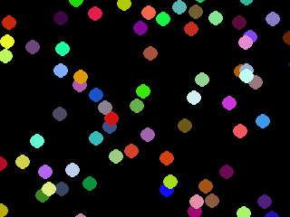
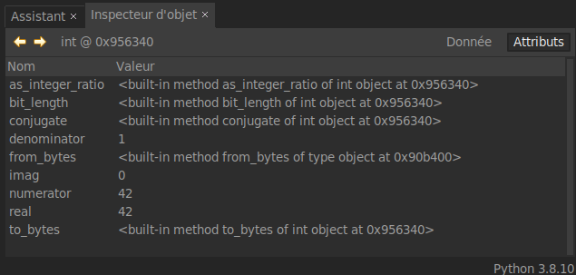
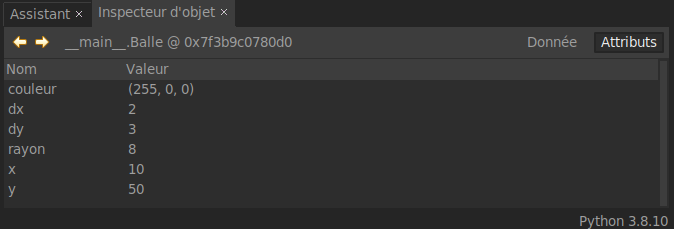

T2.1 POO : Programmation Orientée Objet (part one)⚓︎
2.1.1 Retour sur le TP⚓︎
Et si maintenant on doit créer 100 balles qui rebondissent?

2.1.2 Introduction⚓︎
Paradigme Objet
La POO est un paradigme de programmation, au même titre que la programmation impérative (que nous pratiquons déjà) ou la programmation fonctionnelle (qui sera étudiée cette année en Terminale), ou encore d'autres paradigmes (la liste est longue).
Un paradigme de programmation pourrait se définir comme une philosophie dans la manière de programmer : c'est un parti-pris revendiqué dans la manière d'aborder le problème à résoudre. Une fois cette décision prise, des outils spécifiques au paradigme choisi sont utilisés.

Mais qu'est-ce qu'un objet?
Vocabulaire
En POO, une classe est un modèle (on parle parfois de moule) de création d’objets (en Python c’est un type). Un objet est une valeur (au sens large), instance d’une classe.
La classe permet de définir quels seront les attributs (ou variables d’instance, c’est à dire les données associées à l’objet, qui le caractérisent) et les méthodes (comportement de l’objet) qui sont des fonctions qui s'appliquent uniquement aux objets de cette classe.
Nous en avons déjà manipulés sans le savoir:
>>> n = 42
>>> type(n)
<class 'int'>
n est une instance de classe int. Dans l'inspecteur d'objet de Thonny, on observe que cet objet possède des attributs (comme real par exemple) ainsi que des méthodes (comme bit_length par exemple).

On manipule ces objets (attributs et méthodes) par la notation pointée spécifique à la POO...
>>> n.real
42
>>> n.bit_length()
6
Un autre exemple avec la classe list bien connue:
>>> tab = [1, 2, 3]
>>> type(tab)
<class 'list'>
>>> tab.append(4)
>>> tab
[1, 2, 3, 4]
2.1.3 Création d'une classe⚓︎
Créons une classe permettant de structurer l'objet «balle» du DL2.

Définition de la classe
On définit le nom d'une classe avec le mot-clé class, avec une majuscule (par convention):
1 2 | |
On peut dès à présent créer une instance de Balle, mais avec une définition aussi pauvre, on ne peut pas en faire grand chose, sauf créer des attributs de façon anarchique:
>>> b = Balle()
>>> type(b)
<class '__main__.Balle'>
>>> b.x = 1
>>> b.nimp = True
Méthode constructeur
Il s'agit de munir une instance de ses attributs dès sa création, à l'aide de la méthode spéciale (ou magique) __init__ qui comme son nom l'indique, initialise les attributs de l'objet avec les valeurs passées en paramètre. C'est un passage obligé.
La façon classique de définir un objet est de donner les valeurs de ses attributs lors de la création.
1 2 3 4 5 6 7 8 | |
Balle, de position de départ (10, 50), de déplacement (2, 3), rouge et de rayon 8:
>>> b = Balle(10, 50, 2, 3, (255, 0, 0), 8)

On peut aussi affecter des valeurs identiques pour toutes les instances d'une classe, ou bien les choisir aléatoirement.
1 2 3 4 5 6 7 8 9 10 11 12 | |
Pour déclarer un objet, on ne donne ici que sa couleur:
>>> b = Balle((255, 110, 66))
Paramètre self
Le premier paramètre d'une méthode de classe (comme __init__ ci-dessus) est toujours self. Stricto sensu, ce n'est pas un mot réservé du langage Python (mais par convention oui), il sert à préciser que les variables d'instance (les attributs) et les méthodes sont propres à l'objet que l'on définit dans la classe.
Ajout d'une méthode
On définit les méthodes comme des fonctions, dans le corps de la classe (c'est-à-dire en respectant l'indentation), et avec self en premier paramètre.
1 2 3 4 5 6 7 8 9 10 11 | |
Dans la fonction circle, on distingue donc screen qui est une variable globale (pas de self) des autres variables d'instance (préfixées par self).
Appel d'une méthode
On peut appeler une méthode de deux façons (avec obj instance d'une classe Classe possédant une méthode methode):
obj.methode(*args)Classe.methode(obj, *args)
Bien que ces deux syntaxes sont techniquement identiques, on n'utilise dans la pratique que la première, mais connaître la deuxième permet de comprendre pourquoi le paramètre self est toujours en premier, pourquoi l’oublier peut produire des bugs difficiles à trouver, et pourquoi ce n’est pas un mot réservé (c’est un simple nom de paramètre, mais conventionnellement, on l’appelle self).
Exemple:
>>> l = [1, 2, 3]
>>> l.append(4)
>>> list.append(l, 5)
>>> l
[1, 2, 3, 4, 5]